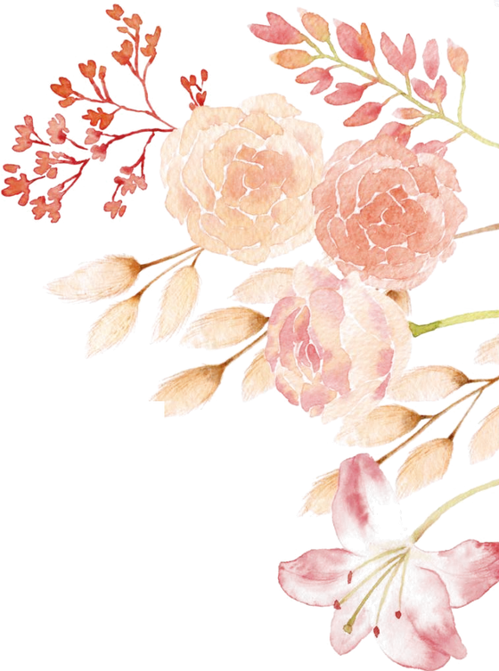
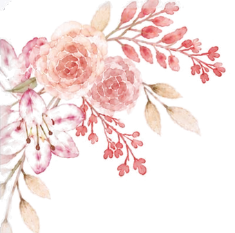

Tonga soa · Bienvenue
Fitia & Diana
Tradition · Élégance · Convivialité
« Revêtez-vous de l'amour, qui est le lien de la perfection. »
Le mariage
La cérémonie
Villa ny Natiora
By-pass Alasora, Antananarivo
Maison familiale entourée de grands espaces extérieurs, à 200 m de la route principale du By-pass. Parking sur place.
Prévoyez de 30 minutes à 1 h 30 de trajet depuis le centre selon la circulation.
- By-passAu carrefour avec la route d'Alasora (Orion Hotel et Domaine Alasora d'un côté, Gastro Pizza Alasora de l'autre), prenez la route d'Alasora vers le sud, direction Alasora.
- Route d'AlasoraPassez la Pharmacie Amboaroy et DTE System, puis tournez à droite à hauteur de School Smart, qui est sur votre gauche.
- ArrivéeLa villa est sur votre droite, juste après Raitra Kidz ; l'église Fiangonana Apokalypsy Alasora Libanona est sur votre gauche. Parking sur place.
D'après le plan du faire-part.
Code vestimentaire
Pour s'accorder au thème de la cérémonie, traditionnel et élégant, nous vous invitons à choisir une tenue ou des accessoires dans les couleurs ci-dessous.
- Pêche
- Abricot
- Corail
- Rose poudré
- Vert sauge
- Bleu pastel
- Jaune pastel
Les soirées sont fraîches en altitude : prévoyez une veste ou un châle.
Comprendre le vodiondry
Glissez pour découvrir les anecdotes →
La demande en mariage
Le vodiondry est la demande en mariage traditionnelle des hautes terres. La famille du marié se présente à la famille de la mariée pour demander officiellement sa main. Le nom désigne, à l'origine, le morceau de mouton offert aux parents de la mariée ; aujourd'hui, ce présent est symbolique.
Le kabary
Les deux familles s'expriment par le kabary, un art oratoire fait de proverbes et d'images. Chaque famille a son orateur. Écoutez, applaudissez quand l'assemblée applaudit, et laissez la parole aux aînés : ils occupent une place d'honneur.
Le saviez-vous ?
Le dos du mouton
Vodiondry signifie littéralement « croupe du mouton » : vody, la croupe, et ondry, le mouton. Ce morceau de choix était offert aux parents de la mariée ; une enveloppe symbolique l'a remplacé.
Le saviez-vous ?
Le morceau d'honneur
Ce n'est pas un hasard : à table, le croupion du poulet, le vodiakoho, revient traditionnellement au père ou à l'aîné. Offrir le « vody », c'est rendre hommage.
Le saviez-vous ?
Commencer par s'excuser
Un kabary s'ouvre par la fialan-tsiny : l'orateur s'excuse par avance de ses maladresses et salue chacun selon son rang. Plus il se montre humble, plus il est admiré.
Le saviez-vous ?
Une joute courtoise
L'orateur de la famille de la mariée peut faire mine d'hésiter ou poser des questions ; celui du marié répond par des proverbes et des images. Le public apprécie les belles répliques.
Le saviez-vous ?
Souffler l'eau
La bénédiction des aînés s'appelle tso-drano. Le mot évoque l'eau que l'on soufflait autrefois sur les mariés pour leur porter bonheur.
Les étapes propres à nos familles seront détaillées ici.
En malgache, la voyelle finale se prononce à peine. Les prononciations sont approximatives.
Glissez pour voir toutes les expressions →
Saluer
- SalamaSalut « sa-lam »
- Manao ahoanaBonjour « ma-naou a-oun »
- Manao ahoana ianao ?Comment allez-vous ? « ma-naou a-oun i-a-naou »
- Tsara be, misaotraTrès bien, merci « tsar bé, mi-sôtch »
Se présenter
- Ny anarako dia…Je m’appelle… « ni a-na-rou di »
- Iza no anaranao ?Comment vous appelez-vous ? « i-za nou a-na-ra-naou »
- Avy any Frantsa ahoJe viens de France « a-vi a-ni frantch a-ou »
- Faly mahafantatra anaoEnchanté·e « fa-li ma-fan-tatch a-naou »
Politesse
- Misaotra betsakaMerci beaucoup « mi-sôtch bé-tsak »
- AzafadyS’il vous plaît, pardon « a-za-fad »
- Tsy misy fisaoranaDe rien « tsi mis fi-saou-ran »
- Eny · TsiaOui · Non « é-ni · tsi »
À la fête
- Tonga soaBienvenue « toung soua »
- Arahabaina !Félicitations ! « a-ra-a-bain »
- Mirary soa ho anareoTous nos vœux de bonheur « mi-rar sou ou a-na-ré »
- Mazotoa homana !Bon appétit ! « ma-zou-tou ou-man »
Utile
- Tsy mahay teny malagasy ahoJe ne parle pas malgache « tsi ma-haï té-ni ma-la-gas a-ou »
- Tsara be !C’est magnifique ! « tsar bé »
- VelomaAu revoir « vé-loum »
Le mariage
Programme du jour J
Dimanche 25 avril 2027, à la Villa ny Natiora.
Arrivée des invités
Animation musicale : Mpitsoka mozika.
Début de la cérémonie traditionnelle
Le vodiondry, en plein air, autour d'un podium fleuri.
Cocktail
Photos des fiancés et photos avec les invités, au son d'un saxophoniste.
Ouverture du déjeuner
Sous la tente, avec un artiste, un orchestre et un DJ.
Le gâteau
Puis la fête continue avec le DJ.
Fin officielle de la réception
Le mariage
Répondre à l'invitation
Merci de répondre avant le 25 février 2027.
« Sitrakay raha tso-drano ara pomba Malagasy no atolotrareo. »
Les mariés seront touchés de recevoir votre tso-drano, selon la coutume malgache.
Venir
Vos préparatifs, dans l'ordre
- Dès maintenantRéservez votre billet d'avion. Avril tombe pendant les vacances scolaires de printemps : les prix montent vite.
- Avant le 25 février 2027Confirmez votre présence et vos dates de séjour.
- Février 2027Réservez votre hébergement et vérifiez votre passeport.
- Mars 2027Consultation santé et demande de visa.
- La semaine du départBouclez votre valise avec la liste à cocher.
- Avant le 25 février 2027Confirmez votre présence et le nombre de personnes.
- Mars 2027Préparez votre tenue selon le code vestimentaire.
- Avril 2027Repérez le trajet jusqu'à la Villa ny Natiora, sur le By-pass, et prévoyez de la marge pour la circulation.
- Le 25 avrilArrivez à 10 h 30 pour l'accueil des invités. Voir le programme du jour J.
- Après le mariageSi vous le souhaitez, rejoignez une partie de la semaine de découverte.
Venir
Billet d'avion depuis l'Europe
Vous atterrirez à l'aéroport international d'Antananarivo-Ivato, code TNR, à environ 15 km au nord du centre.
- Vol direct
- Depuis Paris-Charles-de-Gaulle, environ 11 h de vol.
- Avec escale
- De 14 à 20 h selon l'escale : La Réunion, Maurice, Addis-Abeba, Istanbul, Nairobi…
- Depuis l'Espagne
- Pas de vol direct : correspondance à Paris, Addis-Abeba, Istanbul ou Nairobi depuis Madrid ou Barcelone.
| Option | Durée | À savoir |
|---|---|---|
| Direct depuis Paris | ≈ 11 h | Le plus simple, souvent de nuit. |
| Via La Réunion ou Maurice | 14–16 h | Possibilité d'ajouter une étape dans l'océan Indien. |
| Via Addis-Abeba, Istanbul ou Nairobi | 15–20 h | Souvent moins cher, départ possible d'autres villes d'Europe. |
Un tarif de groupe ou une sélection de vols recommandés pourra être ajouté ici.
- Quand réserver
- Dès maintenant : avril coïncide avec les vacances scolaires de printemps en France.
- Arrivée conseillée
- Au moins deux jours avant la cérémonie, pour récupérer du voyage.
- Décalage horaire
- +1 h par rapport à Paris et Madrid en avril.
Aujourd’hui, Madagascar a 1 h d’avance sur Paris. En avril, l’écart sera de 1 h.
Venir
Formalités administratives
Un visa touristique est obligatoire pour les ressortissants européens.
- Dès maintenantPasseport valide au moins 6 mois après votre date de retour, avec des pages vierges.
- À la réservationAssurance voyage couvrant les frais médicaux et le rapatriement.
- 2 mois avantConsultation santé chez votre médecin ou dans un centre de vaccinations internationales : vaccins conseillés et prévention du paludisme selon l'itinéraire.
- 1 mois avantVisa : demandez l'e-visa en ligne, ou obtenez-le à l'arrivée à l'aéroport. Un billet retour est exigé. N'utilisez que le portail officiel en .gov.mg ; méfiez-vous des sites intermédiaires payants.
Douane
Ce que vous pouvez apporter ou rapporter, et ce qu'il faut déclarer à l'arrivée comme au départ : consultez le guide officiel des douanes malgaches avant de faire vos valises.
- Avant le départSignalez votre voyage à votre pays : sur Ariane pour les Français, au Registro de Viajeros pour les Espagnols. Gardez une copie numérique de vos documents.
Les règles changent : vérifiez-les sur la page Conseils aux voyageurs — Madagascar du ministère français des Affaires étrangères, ou sur le site du Ministerio de Asuntos Exteriores pour les Espagnols, avant votre départ.
Venir
La météo en avril
Avril marque la fin de la saison des pluies. À Tananarive, à 1 280 m d'altitude, les journées sont douces et les nuits fraîches. Sur les côtes, il fait chaud et humide.
Températures moyennes d'avril, minimum et maximum
Moyennes indicatives, en °C.
- Pluie
- Averses encore possibles en fin de journée, surtout en début de mois.
- Soleil
- Fort même par temps frais : chapeau et crème solaire.
- Écart jour / nuit
- Jusqu'à 10 °C sur les hautes terres. Pensez aux couches.
Venir
Qu'apporter dans sa valise
Cochez au fur et à mesure. Vos coches restent enregistrées sur cet appareil.
0 sur 18 objet prêt
Venir
Estimer son budget
Six réponses pour estimer votre voyage, vol compris.
Vols aller-retour2 000 €
E-visa70 €
Assurance voyage120 €
Hébergement à Tana320 €
Repas200 €
Transports sur place240 €
Divers (SIM, pourboires, souvenirs)160 €
Niveau Confort · prix indicatifs d’octobre 2026, à vérifier. Hors cadeau aux mariés. Touchez un poste pour voir sa source.
Sur place
Hébergement
Où dormir selon le moment du séjour. Notre sélection d'hôtels sera ajoutée ici.
Arrivée et départ
Près de l'aéroport d'Ivato
Pratique pour la première nuit après un long vol, et la dernière avant un départ matinal.
Charme
Haute-Ville
Ruelles pavées, maisons anciennes et vue sur les collines. Les principaux sites se rejoignent à pied.
Confort
Ivandry et Ankorondrano
Quartiers récents, hôtels modernes et nombreux restaurants.
| Gamme | Hôtel | Prix par nuit | Distance de la villa |
|---|---|---|---|
| Simple | Hôtel à choisir | — | — |
| Intermédiaire | Hôtel à choisir | — | — |
| Haut de gamme | Hôtel à choisir | — | — |
Sur place
Se déplacer à Tananarive
La ville est étendue, vallonnée et souvent embouteillée. Comptez large pour chaque trajet.
Depuis l'aéroport
De 30 minutes à 1 h 30 jusqu'au centre selon l'heure. Une navette pour les invités est à l'étude.
Voiture avec chauffeur
La solution la plus confortable pour la journée du mariage et pour la semaine de découverte.
Taxis
Les taxis n'ont pas de compteur : fixez le prix avant de monter et payez en ariary. Demandez à votre hôtel un chauffeur de confiance.
À éviter
Marcher seul la nuit, et les minibus collectifs (taxi-be) avec des bagages.
- Heures de pointe
- De 7 h à 9 h et de 16 h à 19 h.
inDrive
Application internationale : vous proposez votre prix, les chauffeurs acceptent ou font une contre-offre. Souvent la moins chère ; paiement en espèces, en ariary. Le nombre de chauffeurs varie selon les quartiers.
Piqla
Application malgache de VTC, lancée en 2024 à Antananarivo. Prix connu à la commande et trajet suivi en direct ; paiement par carte bancaire ou MVola, assistance WhatsApp pour les visiteurs étrangers.
Installez-les avant le départ et créez votre compte avec le Wi-Fi de l'hôtel ou une carte SIM locale. Vérifiez la plaque et le nom du chauffeur avant de monter.
Aéroport d'Ivato
Bureaux de change dans le hall des arrivées, ouverts à l'arrivée des vols internationaux : pratique pour le visa et le premier taxi. Au départ, on y reconvertit ses ariary.
Socimad · Tsaralalana
Bureau de change agréé du centre-ville, 14 rue Radama Ier. Horaires annoncés : 8 h – 17 h en semaine, à confirmer au +261 32 07 365 95.
BMOI · Antaninarenina
Banque du centre-ville : change des euros au guichet en semaine. La plupart des distributeurs de la ville acceptent la carte Visa.
Gardez vos reçus de change et évitez les changeurs de rue. Prévoyez des petites coupures pour les taxis et les marchés.
Convertisseur euro – ariary
Sur place
La semaine de découverte
Cinq jours à Nosy Be en petit groupe, avec les mariés, après une journée de repos à Tana. Chacun réserve son logement, idéalement à Andilana. Programme à confirmer.
- 27mar.
Envol pour Nosy Be
1 h 45 de vol depuis Tana, installation à Andilana, coucher de soleil sur la plage.
- 28mer.
Lokobe en pirogue
Forêt primaire, lémuriens noirs et déjeuner au village d'Ampasipohy.
- 29jeu.
Nosy Iranja
Journée en bateau : banc de sable entre deux îlots, tortues, poisson grillé.
- 30ven.
Nosy Komba
L'île des lémuriens et des brodeuses le matin, après-midi libre.
- 1sam.
Mont Passot et saveurs
Ylang-ylang, cacao et vanille, vue sur les lacs sacrés, puis vol vers Tana.
- 2dim.
Retour en Europe
Vol depuis Ivato, la tête pleine de souvenirs.
Sur place
Incontournables et adresses insolites
À Tananarive, aux alentours et ailleurs sur l'île. Vos adresses personnelles viendront s'ajouter.
19 lieux affichés
Coup de cœur Instagram
Where to Chill in Dago
Restos, bars, cafés et sorties à Tana : le compte à suivre. @_where_to_chill_in_dago
Voir sur InstagramRova de Manjakamiadana
Tananarive · Haute-VilleLe palais de la Reine domine la ville depuis la plus haute colline. La plus belle vue sur Tananarive.
Palais d’Andafiavaratra
Tananarive · Haute-VilleL’ancienne résidence du Premier ministre, devenue musée, au bout des ruelles pavées.
Marché de la Digue
Tananarive · route d’IvatoLe grand marché de l’artisanat : raphia, bois sculpté, soie sauvage, vanille.
Analakely
Tananarive · centreLe marché populaire au pied des grands escaliers. Animé, coloré, à faire accompagné.
Le guide Tiakaly
Madagascar · tiakaly.comPlus de 300 restaurants, hôtels et lieux testés à Madagascar : cherchez par plat, par quartier ou selon vos envies.
Voir le guide TiakalyL’Arrivage
AntananarivoBrasserie à la française, fruits de mer et huîtres.
Voir le guide TiakalyTrattoria Isoraka
Antananarivo · IsorakaPizzeria citée par Tiakaly parmi les meilleures pizzas de Tana.
Voir le guide TiakalySo Hot
AntananarivoBurgers recommandés par Tiakaly.
Voir le guide TiakalyClub Madagascar
Talatamaty · près de l’aéroportPoulet frit à la coréenne, recommandé par Tiakaly.
Voir le guide TiakalyMusée de la photographie
Tananarive · Haute-VilleUn siècle d’histoire malgache en images, dans une maison ancienne.
Parc de Tsimbazaza
Tananarive · sudJardin botanique et zoologique : lémuriens, baobabs et plantes endémiques en pleine ville.
Colline royale d’Ambohimanga
20 km au nordAncienne cité royale et lieu sacré, inscrite au patrimoine mondial de l’Unesco.
Lemurs’ Park
22 km à l’ouestDes lémuriens en semi-liberté dans un jardin botanique. Idéal pour une demi-journée.
Croc Farm
Près de l’aéroport d’IvatoCrocodiles du Nil, caméléons et fossas. À caser avant un vol.
Andasibe-Mantadia
3 à 4 h à l’estLa forêt humide et le chant de l’indri, le plus grand des lémuriens.
Antsirabe
3 à 4 h au sudVille d’eau aux pousse-pousse colorés et ateliers de miniatures en métal recyclé.
Allée des Baobabs
Morondava · vol intérieur conseilléLes baobabs géants au coucher du soleil, image emblématique de l’île.
Nosy Be
Nord-ouest · vol intérieurPlages, plongée et îlots alentour pour finir le séjour au soleil.
Tsingy de Bemaraha
OuestForêt de pics calcaires. Souvent inaccessible en avril : les pistes rouvrent après la saison des pluies.